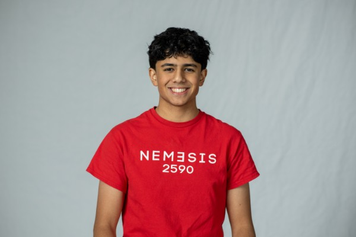

Hi, my name is Arya
My name is Arya, and I am an Information Systems Major at Carnegie Mellon University. I am constantly driven by my passion for technology, problem solving, and team building, which is why I decided to make my future focus on these elements. Outside of academics, I enjoy playing and listening to music, as well as watching sports. This includes all genres, from classical to hip hop, UFC to basketball. I also play the tabla, an instrument I have been learning since elementary school, and has allowed me to express myself in ways other fields cannot. I love learning new things about myself, and the world around me, whether this be through picking up new hobbies or just learning from class. This website showcases projects that I have worked on, my current interests, and what I look forward to. If there are any questions, or you want to reach out, don't hesitate to use the contact form!